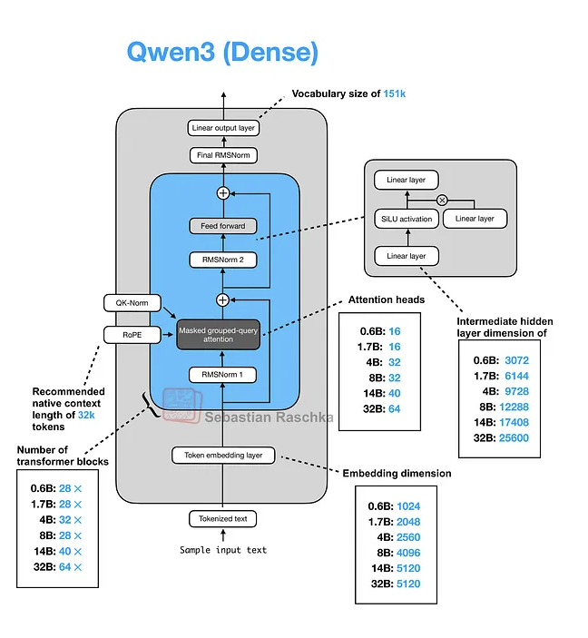
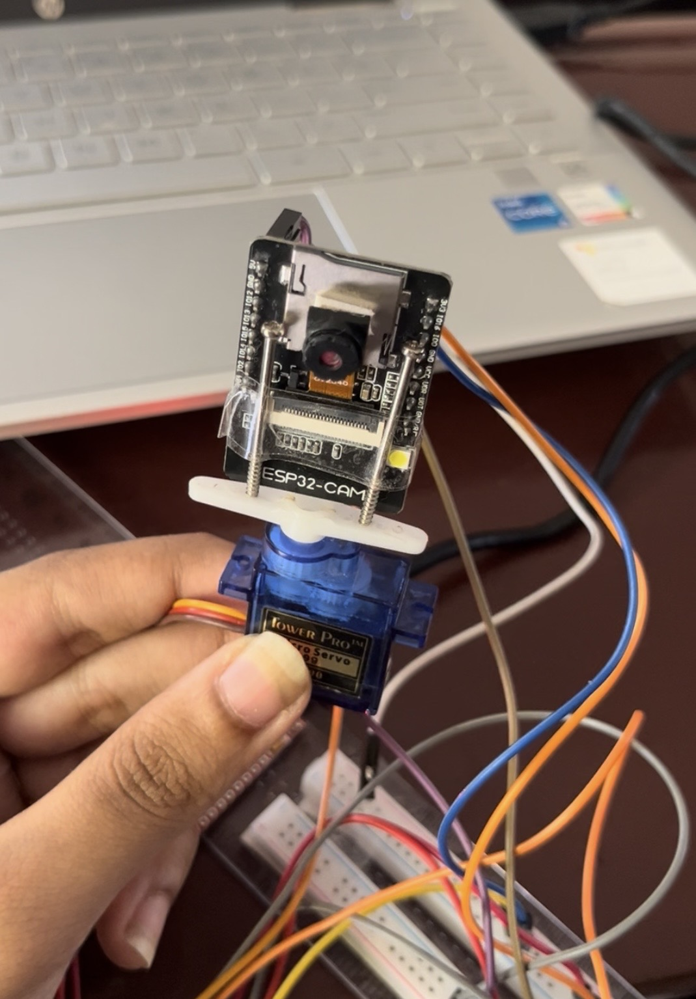
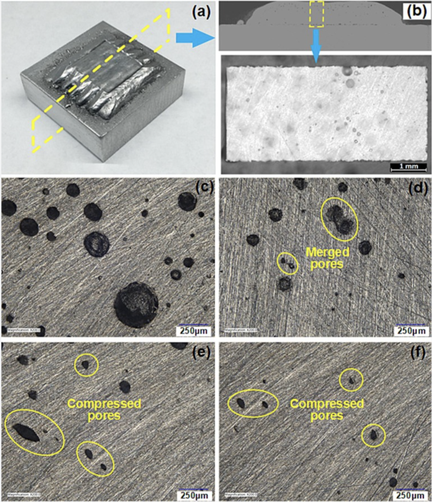
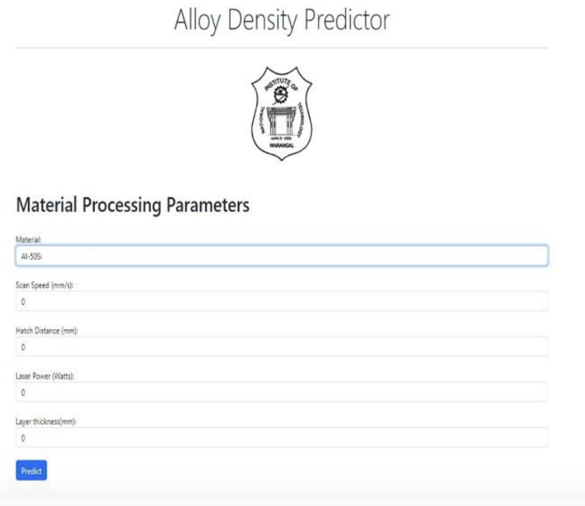

AI and machine learning
Model training, distillation, evaluation, supervised learning, transformers, computer vision, defect detection, and predictive modeling.
PyTorchYOLOv3TransformersOpenCV
AI · Robotics · Mechanical Systems
I am an AI engineer with a mechanical engineering foundation, focused on computer vision, robotics, edge intelligence, and machine learning for real-world systems. My work sits at the point where sensors, models, hardware, and human needs meet.
About me
My first engineering interests were physical: mechanisms, robots, motors, and the small thrill of opening a device just to understand how it worked. Over time, robotics taught me that good hardware is only half of an intelligent system. Algorithms turn sensing into perception, prediction, and action. That realization led me from mechanical engineering into artificial intelligence, where I now work on systems that can understand data from the physical world and make useful decisions.
I enjoy projects with practical constraints: limited compute, low-cost hardware, noisy real-world data, and users who need the system to work outside a controlled lab. The projects below show that focus through edge AI, computer vision, additive manufacturing, and applied machine learning.
Model training, distillation, evaluation, supervised learning, transformers, computer vision, defect detection, and predictive modeling.
Hardware-software integration, microcontrollers, sensors, camera systems, low-cost embedded design, and robotic reasoning workflows.
Mechanical systems thinking, additive manufacturing, process optimization, material density prediction, and quality control applications.
Featured projects
Here are a few of the projects that I did that created a real world impact.

Introduction and objective. Robots used in search and rescue, assistive robotics, and field environments cannot always rely on cloud connectivity. This project addresses that limitation by reducing the size of a vision-language model while preserving the reasoning skills needed for natural-language robotic tasks.
Method. I developed a task-specific distillation pipeline for Qwen3-VL as well as Qwen3.5-VL. The model is progressively compressed through architectural pruning and then evaluated on robotic reasoning dimensions such as spatial grounding, affordance understanding, and action planning.
Results and evaluation. The evaluation framework identifies where capability begins to degrade as model size decreases. This makes it possible to choose a smaller model that still supports reliable on-device reasoning instead of depending on cloud APIs.
My contribution. I designed the compression strategy, implemented the training and evaluation pipeline, and analyzed failures across grounding, commonsense, and planning tasks.

Introduction and objective. In cost-sensitive markets, useful smart systems must balance performance with affordability. This project helps users locate misplaced objects in cluttered environments using a low-cost camera module and a custom object detection model.
Method. We used the ESP32-CAM as an inexpensive visual sensor and moved the computationally intensive inference step to a connected laptop. I trained a customized YOLOv3 model on images of commonly lost objects and integrated the camera stream with the detection pipeline. A buzzer provided immediate feedback when the target object was detected.
Results and evaluation. The system showed that practical object detection can be built without expensive embedded processors by distributing sensing and computation intelligently. It created a simple interaction loop: scan, detect, and alert.
My contribution. I created the dataset, trained the model, and integrated the ESP32-CAM stream with the laptop-based inference and alert system.

Introduction and objective. Porosity in wire arc additive manufacturing can reduce part strength and reliability, especially in high-stakes industries such as aerospace and heavy manufacturing. This project explores machine learning as a faster and more scalable alternative to expensive post-process inspection.
Method. We developed a learning pipeline to identify porosity signatures from WAAM process data and visual inputs. The workflow included data cleaning, feature extraction, model training, and defect classification or prediction.
Results and evaluation. The system demonstrated promising ability to identify defect-prone regions, showing how data-driven inspection could support real-time or near-real-time quality control in additive manufacturing.
My contribution. I focused on preprocessing the collected data, extracting useful features, and developing the machine learning pipeline for porosity prediction.

Introduction and objective. Space-grade additive manufacturing requires highly dense parts, but experimental process optimization is expensive and wastes material. This project used machine learning to predict alloy density from process parameters and help identify settings that support high densification.
Method. Working under ISRO guidance, I built predictive models for powder-bed fusion density estimation and packaged the model into a user-facing app so scientists could use the prediction workflow without running machine learning scripts manually.
Results and evaluation. The app predicted material density with high accuracy and supported process-parameter optimization toward 99% densification. The work reduced dependence on repeated physical trials and contributed to a first-author publication on multi-material density prediction.
My contribution. I developed the model, built the app interface, evaluated prediction performance, and contributed to the research paper as first author.
Additional experiences
Implemented a transformer model for Indian English audio emotion classification and compared it against conventional models such as SVM and CNN for customer-service IVR applications.
Built a line-following robot with Arduino and IR sensors, then continued with small electronics and embedded projects that developed my hardware debugging instincts.
Mentored student teams, supported machine-learning hackathon participants, and helped younger students translate robot ideas from sketches into working concepts.
Resume
Contact
Email: sanaka2453@gmail.com · GitHub: github.com/san2453 ·